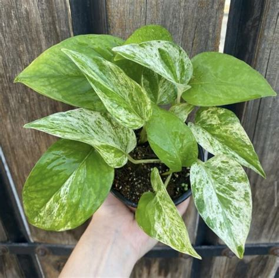

Soy Mateo Andres D'Altroy, de DNI 46.562.663 y estoy haciendo esto como parte de mi curriculum en el proceso de aprobar la materia de Proyecto de Software.
📬Canales de Comunicación
Información de Contacto
Puedes ponerte en contacto conmigo o verificar mis datos académicos a través de los siguientes medios:
Especies seleccionadas por su adaptación a espacios cubiertos, iluminación natural indirecta y capacidad de purificación ambiental.
Interior

Potus
Epipremnum aureum
Planta colgante o trepadora muy resistente y longeva. Tolera diversos niveles de iluminación y es reconocida por sus propiedades purificadoras del aire.